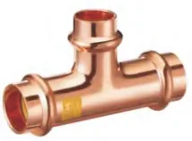
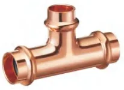
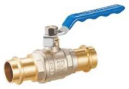

Złączki zaciskane press Besco
Miedziane systemy press (złączki zaprasowywane) w profilach V i M, serie do gazu, press ze stali węglowej oraz zawory kulowe. Miedź według EN 1254-7.
- Indeksy
- 1 043
- Średnice
- 12–108 mm
- Producent
- Besco



Komu to sprzedasz i jak.
- Kto kupuje w Twojej hurtowni
- Firmy instalacyjne z zaciskarkami: kotłownie, piony i przyłącza w budownictwie wielorodzinnym i obiektach, instalacje gazowe.
- Argument sprzedażowy
- Profil M można zaciskać szczęką V w zakresie DN12–28, więc jeden stan magazynowy obsłuży klientów z oboma typami szczęk.
Linie w systemie
Źródło: katalog Besco 2026| Linia | Średnice | Zastosowanie | Parametry | Indeksy | Akcja |
|---|---|---|---|---|---|
 Miedź press, profil VBesco | 12–54 mm | woda pitna, CO, przemysł | 16 barDVGWKIWAWRASRISE | 257 | Indeksy |
 Miedź press, profil MBesco Miedź press, profil MBesco | 12–108 mm | woda pitna, CO, przemysł | 16 barDVGWWRASRISE | 294 | Indeksy |
 Miedź press do gazu, V i MBesco Miedź press do gazu, V i MBesco | 15–35 mm | gaz ziemny, LPG | 5 barDVGWINiG | 211 | Indeksy |
 Stal węglowa press, profil MBesco Stal węglowa press, profil MBesco | 12–108 mm | CO w obiegu zamkniętym, sprężone powietrze | 16 bar | 256 | Indeksy |
 Zawory kulowe press, kontur V i MBesco | 15–54 mm | woda, CO | 16 barDVGWWRAS | 25 | Indeksy |
Produkty w systemie
113 grup produktów · rozmiary, numery i opakowaniaMiedź press, profil V · woda28 grup · 257 indeksów
Miedź press, profil M · woda28 grup · 294 indeksów
Miedź press, profil V · gaz16 grup · 110 indeksów
Miedź press, profil M · gaz15 grup · 101 indeksów
Stal węglowa press, profil M22 grup · 256 indeksów
Co warto wiedzieć.
Odpowiedzi według dokumentacji producenta. Resztę wyjaśni handlowiec.
Zadzwoń: 798 807 106Czym różni się profil V od M?
To kształt końcówki press i szczęki zaciskarki. Miedź Besco jest w obu profilach (V 12–54 mm, M 12–108 mm), stal węglowa w profilu M. Złączki w profilu M można zaciskać także szczęką V w zakresie DN12–28.
Które złączki nadają się do gazu?
Linie GP Gas w profilu V i M: średnice 15–35 mm, do 5 bar, od −20 do 70 °C, norma EN 1254-7, atesty DVGW i INiG. Do instalacji gazowych nie stosuje się złączek z linii wodnych.
Do czego służy stal węglowa press?
Do zamkniętych instalacji grzewczych i sprężonego powietrza. Profil M, średnice 12–108 mm, do 16 bar, od −10 do 110 °C.
Jakie aprobaty mają złączki miedziane press?
Profil V: DVGW, KIWA, WRAS i RISE. Profil M: DVGW, WRAS i RISE. Linie gazowe: DVGW i INiG. Wszystkie według EN 1254-7.
Jakie zawory kulowe są w systemie?
Zawory kulowe press × press i press × GW w konturach V i M, 15–54 mm, także z przedłużonym trzpieniem. Do 16 bar, od −10 do 110 °C, aprobaty DVGW i WRAS.
Zapytaj o ofertę na złączki zaciskane Besco.
Ceny hurtowe, dostępność i terminy dostaw przygotujemy w ciągu jednego dnia roboczego.
Pozostałe systemy
Wszystkie systemy 02 · Pegler Yorkshire
02 · Pegler YorkshireZłączki na wcisk
Tectite Classic, Pro, 316 i Carbon oraz zawory na wcisk. Montaż bez narzędzi i ognia.
ok. 530 indeksów · 10–54 mmZobacz → 03 · Pegler Yorkshire
03 · Pegler YorkshireZłączki skręcane
Kuterlite K600 i K900 Pro do miedzi, K700 do rur PE oraz zawory z końcówkami zaciskowymi.
ok. 470 indeksów · 6–63 mmZobacz → 04 · Besco
04 · BescoZłączki lutowane
Kształtki EN 1254 serii 4000 i 5000, calowe ANSI B16.22 i G-size do 80 bar.
893 indeksy · 6–108 mmZobacz →